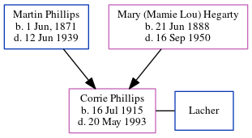

Corrie Lorena Lacher (née Phillips) 1915 - 1993
[ Home ] | [ Calendar ] | [ Surnames Index ] | [ Census Index ] | [ Family History ]The 5th of 6 children of Martin Phillips and Mary (Mamie Lou) Hegarty, Corrie Phillips, the great-aunt of Michele Copp (née Phillips), was born in Atlanta, Georgia on Jul 16, 19151,2,3,4. She and was married to Lacher.
During her life, she was living in Atlanta Ward 3, Fulton, Georgia in 19201; in Atlanta, Fulton, Georgia in 19302 and in 19353 (the same place as her parents had been living in 1930); and in Atlanta, Fulton, Georgia, USA on Apr 1, 19403.
She died on May 20, 19934.
Parents
- Martin Eugene was born on Jun 1, 1871
- Mary (Mamie Lou) was born on Jun 21, 1888
Citations
- 1920 United States Federal Census Online publication - Provo, UT, USA: MyFamily.com, Inc., 2005. For details on the contents of the film numbers, visit the following NARA web page: NARA. Note: Enumeration Districts 819-839 on roll 323 (Chicago City.Original data - United States of America
- 1930 United States Federal Census Online publication - Provo, UT, USA: MyFamily.com, Inc., 2002.Original data - United States of America, Bureau of the Census. Fifteenth Census of the United States, 1930. Washington, D.C.: National Archives and Records Administration, 1930. T626, 2,667 rol
- 1940 United States Federal Census Ancestry.com Operations, Inc. (Age: 24; Marital Status: Single; Relation to Head of House: Daughter)
- U.S., Social Security Applications and Claims Index, 1936-2007 Ancestry.com Operations, Inc.
Family Tree
Generated by ged2site. Last updated on Jun 6, 2024